插图
在确切的经节处看到场景。
共 235 幅插图，每幅都出现在其所描绘场景的经节处。您读马太福音 14 时，就能在经文旁边看到彼得在风暴中下沉的画面。

插图版圣经
完整的《圣经》，支持离线、无广告，配有 235 幅插图，每幅都位于所描绘场景的确切经节处。
免费阅读 · 额外版本一次性购买，无需订阅 · 支持 10 种语言
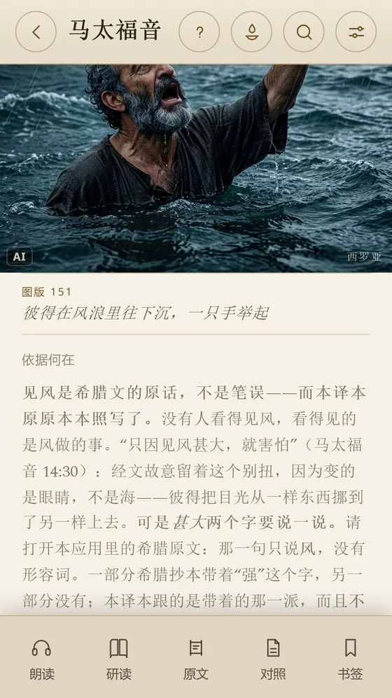
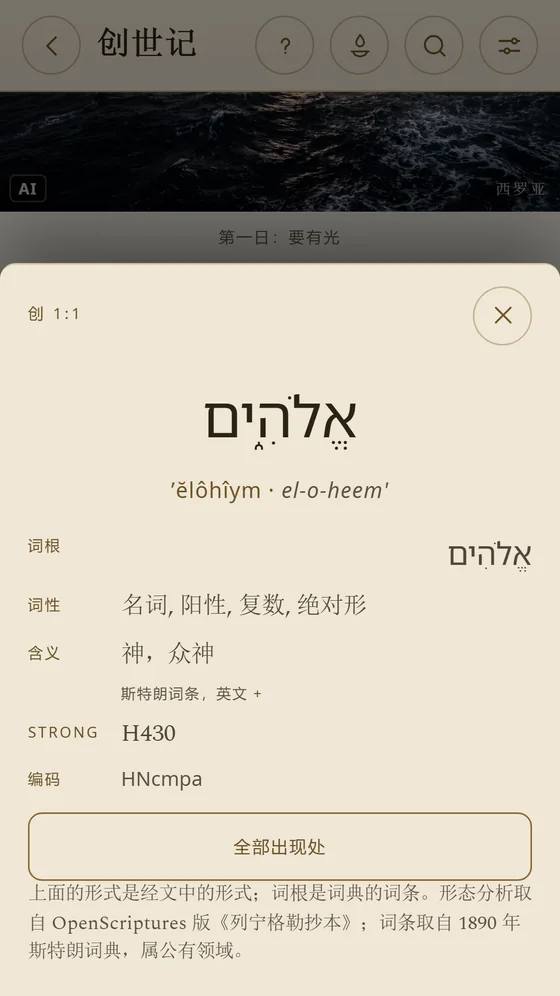
可读、可看、可听、可研读的《圣经》——从第一节经文直至希伯来文和希腊文原文。
插图
共 235 幅插图，每幅都出现在其所描绘场景的经节处。您读马太福音 14 时，就能在经文旁边看到彼得在风暴中下沉的画面。
每个场景的注释
每幅插图都附有注释，说明绘制的依据：经文、考古发掘、古代文献。若研究无法支持某个细节，注释也会如实说明。
画廊
按书卷浏览《圣经》图像，或通过人物画廊浏览。点击一个场景，西罗亚 便会打开相应经文。

研读本圣经
逐章提供历史背景、讨论问题、趣闻知识以及与其他经文的关联。还有供您的小组或细胞小组使用的学习指引，可自行编排并导出为 PDF。
希伯来文与希腊文
如同一本行间对照圣经：每个词的读音和词义、词根、词形变化以及斯特朗编号。在研究版中，经文汇编会按书卷列出每个词的全部出处。
译本
中文正文采用《和合本》（新标点版）。十种语言各有本语言的译本；葡萄牙语版本采用 Bíblia Livre，提供传统版和校勘版两种形式。
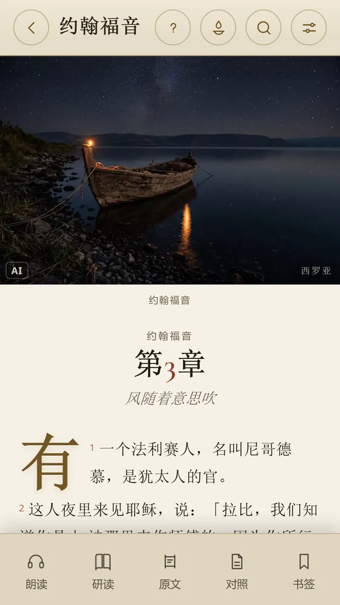
聆听圣经
西罗亚 使用您手机的语音朗读章节，并突出显示正在朗读的经节。这是合成语音，而非播音员录音——并且可离线使用。
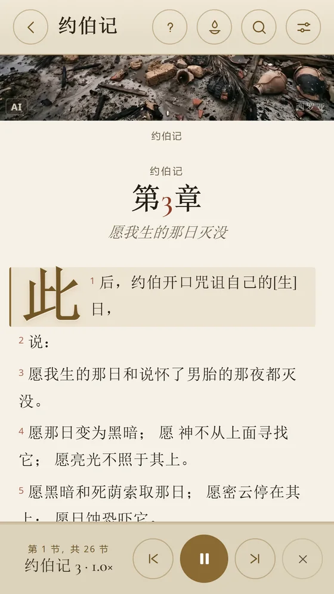
每日经文
每日经文附有注释，讲述是谁、在何处、何时说的。可按主题选择——焦虑、恐惧、哀伤——并以卡片形式分享。
读经计划
从“从这里开始”到一年读完《圣经》，并有每日提醒。21 天读完约翰福音、艰难时刻的诗篇、每天一句箴言。
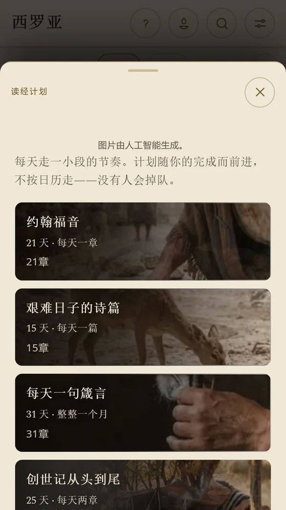
iPad 版
在 iPad 上，插图有了更大的展示空间，阅读如同翻书般舒适。五种颜色的标记、笔记和收藏，全部保存在您的设备上。
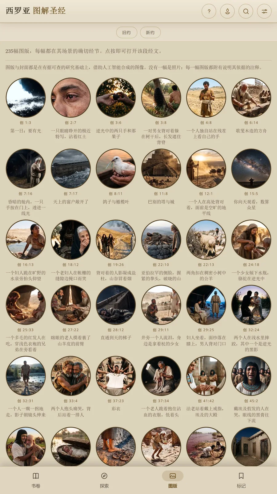
免费版永不过期。插图版、完整版和研究版均为一次性购买，无需订阅：每个版本都包含前一版本的全部内容，升级时只需支付差价。
应用界面。
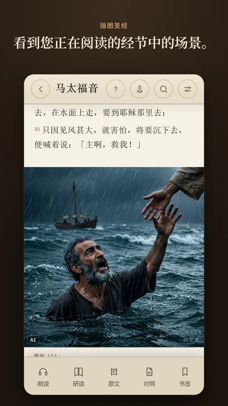
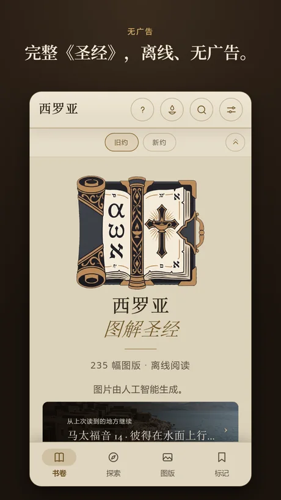
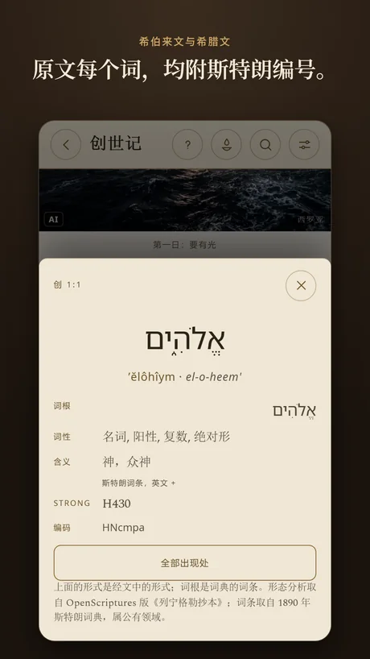
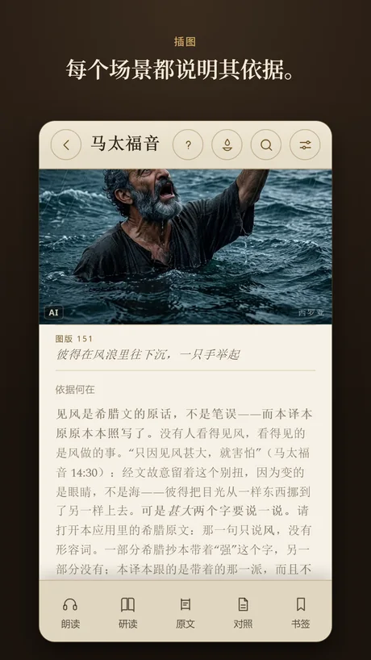
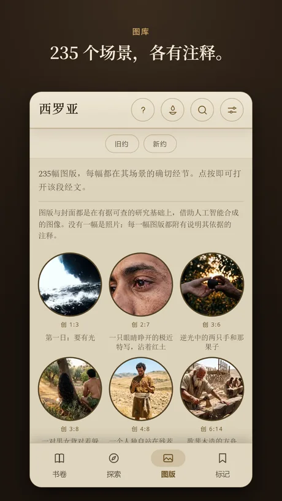
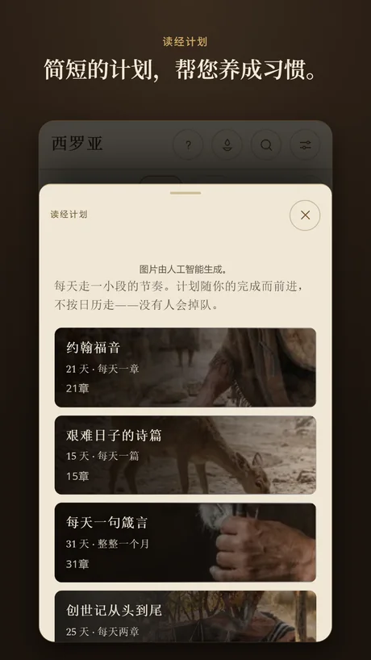
是的。免费版包含完整《圣经》，永不过期。插图版、完整版和研究版均为一次性购买，无需订阅；升级时只需支付差价。
可以。在 iPhone 和 iPad 上，经文内置于应用中。只有在您购买版本或打开注释中的链接时才会使用网络。
中文为《和合本》（新标点版）；葡萄牙语为 Bíblia Livre，西班牙语为 Reina-Valera 1909，法语为 Louis Segond 1910，英语为 World English Bible。
不包含。西罗亚 采用新教正典；本版本不含次经，也不含以斯帖记和但以理书的希腊文增补部分。
共 10 种：巴西葡萄牙语、葡萄牙葡萄牙语、英语、西班牙语、法语、意大利语、德语、乌克兰语、韩语和简体中文——包括《圣经》和应用菜单。每种语言各有本语言的译本。
不是。这些图像是在有据可查的研究基础上借助人工智能合成的，每幅都附有说明其依据的注释。《圣经》经文本身未经人工智能处理。
还有其他疑问？请发邮件至 contato@outcomeanalytics.com.br.
免费下载，把整本《圣经》装进口袋。